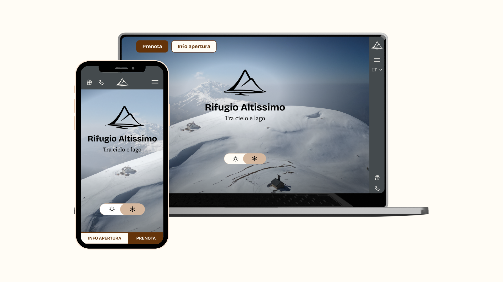

Rifugio Altissimo
Redesign del sito Rifugio Altissimo
- Anno: 2026
- Ruolo: UX/UI Designer
- Strumenti: Figma, Maze, Miro
Overview
Il Rifugio Altissimo "Damiano Chiesa" si trova sulla vetta più alta del Monte Baldo, a Brentonico (TN), con una vista unica sul Lago di Garda. Il sito esistente, realizzato su Wix, non rispecchiava la qualità dell'esperienza reale: navigazione confusa, architettura informativa frammentata, nessuna ottimizzazione mobile e un flusso di prenotazione nascosto e dispersivo. L'obiettivo del redesign era trasformare il sito da semplice vetrina informativa a strumento chiaro, coerente e orientato all'utente, mantenendo intatta l'identità autentica del rifugio.
Processo di lavoro
Il processo è stato articolato in cinque fasi principali:
1. Branding & Grafica
Redesign completo dell'identità visiva: nuovo logo con la "A" di Altissimo integrata nella forma della montagna, payoff "Tra cielo e lago", palette cromatica ispirata ai materiali del rifugio e al paesaggio, scala tipografica modulare su due famiglie (Bricolage Grotesque + Source Serif 4), set di icone a tratto lineare. Tutto documentato in un design system coerente.
2. Discovery
Analisi euristica del sito esistente tramite le 10 euristiche di Nielsen, analisi comparativa di 5 rifugi competitor in Trentino-Alto Adige, definizione del target con dati di settore 2024, survey con 15 utenti reali, 3 user personas (escursionista esperto, mamma con bambini, turista straniero pernottante), user journey as is e to be per ciascuna persona, sitemap attuale e nuova.
3. Wireframing
Progettazione mobile-first con griglia a 12 colonne desktop (1280px) e 4 colonne mobile (393px, iPhone 16). Wireframe ad alta fedeltà per tutte le pagine: homepage, cucina, dormire in rifugio, outdoor, shop. Struttura di navigazione ripensata con sidebar sempre accessibile su desktop e header sticky su mobile.
4. User Interface
Test di usabilità remoto non moderato su Maze con 8 partecipanti del target reale. 4 task testati: prenotazione cena, prenotazione stanza, ricerca sentiero, acquisto shop. SUS Score 74/100 (fascia Good), 83% task success rate medio, 100% di completamento sul flusso prenotazione stanza. Iterazioni post-test: rinomina voce menu "Outdoor" → "Percorsi Monte Baldo" e aggiunta placeholder nel form shop.
Risultati
- Tempo di ricerca informazioni ridotto del 58% rispetto al sito attuale
- 100% di success rate sul flusso prenotazione stanza
- SUS Score 74/100, sopra la soglia minima di 70 definita come obiettivo
- Soddisfazione media post-task: 4,1/5
- Architettura informativa semplificata da 3 livelli di navigazione a struttura piatta